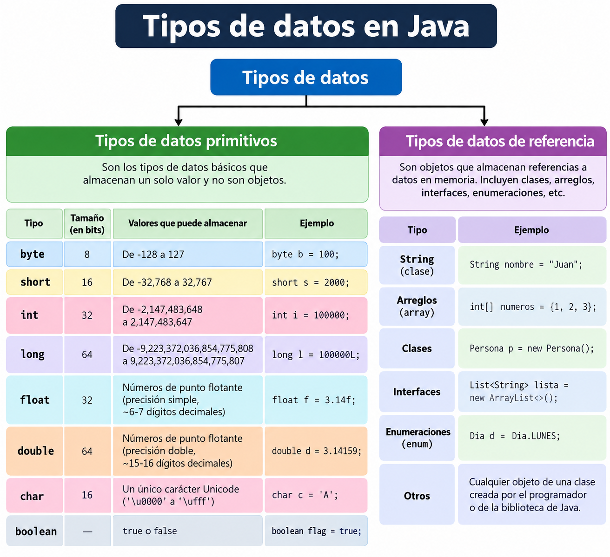
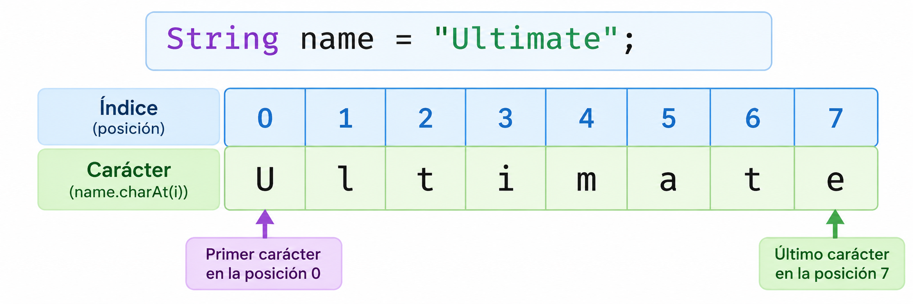
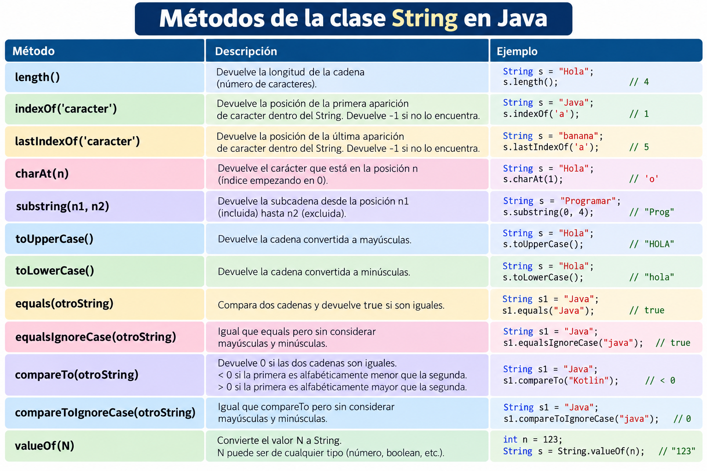
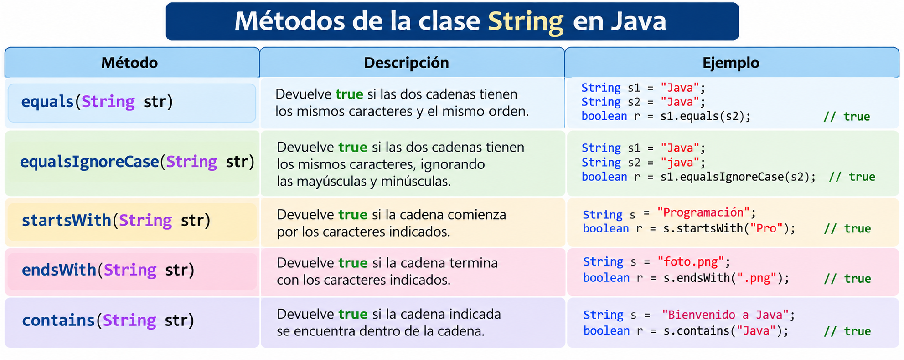
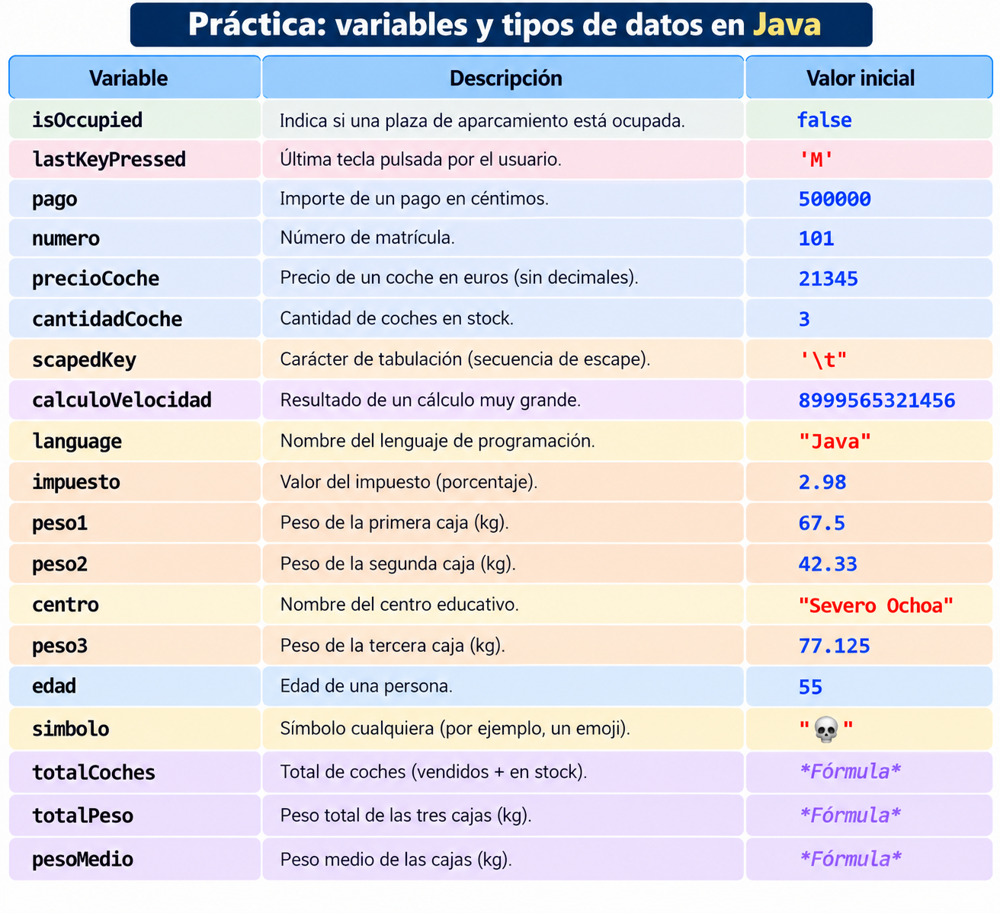

Tipos de datos¶
Un tipo de datos es un conjunto de valores y un conjunto de operaciones definidas en ellos. Se pueden clasificar en primitivos y objetos.
{kind=link}

Tipos de datos en Java¶
Cuando programamos necesitamos almacenar información: una edad, un nombre, el precio de un producto, si un alumno está aprobado, etc.
En Java, cada variable tiene asociado un tipo de dato que determina principalmente:
- Qué clase de información puede almacenar.
- Qué valores puede contener.
- Qué operaciones podemos realizar con ella.
- Cómo se representa esa información en memoria.
Por ejemplo:
int edad = 20;
double precio = 19.95;
char grupo = 'A';
boolean aprobado = true;
String nombre = "Laura";
Cada variable almacena un tipo diferente de información.
Podemos dividir los tipos de datos que utilizaremos inicialmente en dos grandes grupos:
Tipos de datos en Java
│
├── Tipos primitivos
│ ├── Enteros
│ │ ├── byte
│ │ ├── short
│ │ ├── int
│ │ └── long
│ │
│ ├── Decimales
│ │ ├── float
│ │ └── double
│ │
│ ├── Caracteres
│ │ └── char
│ │
│ └── Lógicos
│ └── boolean
│
└── Tipos referencia
└── String
Tipos primitivos¶
Los tipos primitivos son los tipos de datos más básicos que proporciona Java.
Java dispone de 8 tipos primitivos:
| Tipo | Información | Tamaño | Ejemplo |
|---|---|---|---|
byte |
Número entero | 8 bits | byte edad = 25; |
short |
Número entero | 16 bits | short habitantes = 12000; |
int |
Número entero | 32 bits | int puntos = 150000; |
long |
Número entero | 64 bits | long poblacion = 8000000000L; |
float |
Número decimal | 32 bits | float altura = 1.75F; |
double |
Número decimal | 64 bits | double precio = 19.95; |
char |
Un carácter | 16 bits | char grupo = 'A'; |
boolean |
Verdadero/falso | No especificado por Java | boolean aprobado = true; |
Importante
Los tipos primitivos no son objetos. Almacenan directamente un valor de su tipo.
Tipos numéricos enteros¶
Java dispone de cuatro tipos primitivos para representar números enteros:
byte → short → int → long
La diferencia principal entre ellos es la cantidad de memoria utilizada y, por tanto, el rango de valores que pueden representar.
byte¶
El tipo byte utiliza 8 bits, es decir, 1 byte de memoria.
Puede almacenar valores enteros comprendidos entre:
-128 y 127
Ejemplo:
byte edad = 25;
byte temperatura = -5;
byte numeroAlumnos = 30;
No podemos almacenar un valor superior a 127:
byte numero = 200; // ERROR
¿Cuándo utilizar byte?
Su uso es poco frecuente en programas sencillos. Puede resultar útil cuando se trabaja con grandes cantidades de datos binarios o cuando es importante reducir el consumo de memoria.
short¶
El tipo short utiliza 16 bits, es decir, 2 bytes.
Puede almacenar valores comprendidos entre:
-32.768 y 32.767
Ejemplo:
short habitantes = 25000;
short temperatura = -120;
Sin embargo:
short habitantes = 50000; // ERROR
porque 50000 supera el valor máximo que puede almacenar un short.
Note
Al igual que byte, short no suele utilizarse en programas normales. Para trabajar con números enteros utilizaremos habitualmente int.
int¶
El tipo int utiliza 32 bits, es decir, 4 bytes.
Su rango de valores es:
-2.147.483.648
hasta
2.147.483.647
Es el tipo de dato entero que utilizaremos con mayor frecuencia.
Ejemplos:
int edad = 20;
int alumnos = 30;
int puntos = 150000;
int temperatura = -10;
Java considera los números enteros escritos directamente en el código como int por defecto, siempre que el valor pueda representarse mediante este tipo.
Por ejemplo:
int numero = 100;
Regla práctica
Si necesitas almacenar un número entero y no existe ningún motivo especial para utilizar otro tipo, utiliza int.
long¶
El tipo long utiliza 64 bits, es decir, 8 bytes.
Permite almacenar números enteros mucho mayores que int.
Su rango aproximado es:
-9,22 × 10¹⁸ hasta 9,22 × 10¹⁸
Ejemplo:
long poblacion = 8000000000L;
Observa la letra L situada después del número.
8000000000L
La L indica a Java que ese literal numérico debe tratarse como un long.
Utiliza L mayúscula
Es recomendable utilizar L y no l, ya que la letra l minúscula puede confundirse fácilmente con el número 1.
Por ejemplo:
long distancia = 15000000000L;
Tipos numéricos decimales¶
Para almacenar números con parte decimal Java dispone principalmente de:
float
double
Por ejemplo:
3.14
19.95
1.75
-8.25
float¶
El tipo float utiliza 32 bits.
Es un número decimal de precisión simple.
Ejemplo:
float altura = 1.75F;
float temperatura = 36.5F;
La letra F es necesaria porque Java considera los números decimales como double por defecto.
Por ejemplo:
float precio = 19.95; // ERROR
Debemos escribir:
float precio = 19.95F;
Note
float puede ser útil cuando queremos reducir el consumo de memoria o cuando una API concreta lo requiere. Para cálculos decimales generales normalmente utilizaremos double.
double¶
El tipo double utiliza 64 bits y proporciona mayor precisión que float.
Es el tipo decimal utilizado por defecto en Java.
Ejemplo:
double altura = 1.78;
double temperatura = 36.5;
double distancia = 1250.75;
No necesitamos añadir ninguna letra al final:
double precio = 29.95;
Regla práctica
Para trabajar con números decimales utilizaremos normalmente double.
float frente a double¶
float numero1 = 3.1415926535F;
double numero2 = 3.1415926535;
System.out.println(numero1);
System.out.println(numero2);
Obtendremos aproximadamente:
3.1415927
3.1415926535
double puede mantener una mayor precisión.
Dinero y números decimales
Aunque double es adecuado para muchos cálculos, los tipos float y double no representan exactamente todos los números decimales.
En aplicaciones donde la precisión decimal es crítica, como determinados cálculos monetarios, Java dispone de clases específicas como BigDecimal, que estudiaremos más adelante.
char¶
El tipo char permite almacenar un único carácter.
Utiliza 16 bits y representa una unidad de código UTF-16.
Ejemplos:
char letra = 'A';
char grupo = 'B';
char numero = '5';
char simbolo = '@';
Comillas simples
Los valores char se escriben entre comillas simples.
char letra = 'A'; // Correcto
No debemos escribir:
char letra = "A"; // ERROR
Las comillas dobles se utilizan para cadenas de caracteres (String).
char también puede contener números¶
Observa:
char numero = '5';
Aquí '5' no representa el número entero 5, sino el carácter 5.
Por tanto:
int numero = 5;
char caracter = '5';
son dos valores diferentes.
Secuencias de escape¶
Algunos caracteres especiales se representan mediante una secuencia de escape.
Las secuencias de escape comienzan con una barra invertida:
\
Algunas de las más utilizadas son:
| Secuencia | Significado |
|---|---|
\n |
Salto de línea |
\t |
Tabulación |
\" |
Comillas dobles |
\' |
Comilla simple |
\\ |
Barra invertida |
Por ejemplo:
System.out.println("Hola\nMundo");
Resultado:
Hola
Mundo
Otro ejemplo:
System.out.println("Nombre:\tLaura");
System.out.println("Edad:\t20");
Resultado aproximado:
Nombre: Laura
Edad: 20
También podemos escribir unas comillas dentro de un texto:
System.out.println("El profesor dijo: \"Hola\"");
Resultado:
El profesor dijo: "Hola"
boolean¶
El tipo boolean representa un valor lógico.
Solamente puede almacenar dos valores:
true
false
Ejemplos:
boolean aprobado = true;
boolean mayorEdad = false;
boolean usuarioActivo = true;
Los valores booleanos se utilizan principalmente para representar condiciones.
Por ejemplo:
int edad = 20;
boolean mayorEdad = edad >= 18;
System.out.println(mayorEdad);
Resultado:
true
Esto ocurre porque Java evalúa:
edad >= 18
Como edad vale 20, la expresión:
20 >= 18
es verdadera y, por tanto:
mayorEdad = true;
Los valores booleanos serán fundamentales cuando estudiemos estructuras como:
if
while
for
Tamaño de boolean
Java define los valores que puede almacenar un boolean (true y false), pero no especifica un tamaño de almacenamiento fijo comparable directamente con byte, int o long.
Resumen de tipos primitivos¶
| Tipo | Categoría | Tamaño | Ejemplo |
|---|---|---|---|
byte |
Entero | 8 bits | byte n = 100; |
short |
Entero | 16 bits | short n = 20000; |
int |
Entero | 32 bits | int n = 100000; |
long |
Entero | 64 bits | long n = 8000000000L; |
float |
Decimal | 32 bits | float n = 3.14F; |
double |
Decimal | 64 bits | double n = 3.14; |
char |
Carácter | 16 bits | char c = 'A'; |
boolean |
Lógico | No especificado por Java | boolean b = true; |
Una forma sencilla de recordar qué utilizar inicialmente es:
Número entero → int
Número decimal → double
Un carácter → char
Verdadero / falso → boolean
Texto → String
Clases contenedoras o Wrapper Classes¶
Los tipos primitivos no son objetos.
Sin embargo, Java proporciona una clase contenedora (Wrapper Class) para cada uno de los ocho tipos primitivos.
| Tipo primitivo | Clase contenedora |
|---|---|
byte |
Byte |
short |
Short |
int |
Integer |
long |
Long |
float |
Float |
double |
Double |
char |
Character |
boolean |
Boolean |
Por ejemplo:
int edad = 20;
Integer edadObjeto = 20;
En el primer caso:
int edad = 20;
edad utiliza el tipo primitivo int.
En el segundo:
Integer edadObjeto = 20;
utilizamos un objeto de la clase Integer.
Las clases contenedoras proporcionan además métodos útiles.
Por ejemplo, podemos convertir un texto en un número:
String texto = "25";
int numero = Integer.parseInt(texto);
System.out.println(numero);
Resultado:
25
Más adelante
Las clases contenedoras serán especialmente importantes cuando trabajemos con colecciones, genéricos y conversiones de datos.
String¶
String se utiliza para representar cadenas de caracteres, es decir, textos.
Ejemplos:
String nombre = "Laura";
String instituto = "IES La Encantá";
String mensaje = "Bienvenidos a Programación";
Warning
String no es un tipo primitivo.
String es una clase de Java y las variables de tipo String manejan referencias a objetos.
Observa la diferencia:
char letra = 'A';
String texto = "A";
Aunque visualmente contienen algo parecido, son tipos diferentes:
'A' → char
"A" → String
Crear un String¶
La forma habitual de crear un String es utilizando comillas dobles:
String nombre = "Laura";
También podemos utilizar new:
String nombre = new String("Laura");
Sin embargo, para crear cadenas normales debemos preferir:
String nombre = "Laura";
porque es más sencillo y permite a Java reutilizar cadenas mediante el String Pool.
Tip
Utiliza normalmente literales entre comillas dobles:
String modulo = "Programación";
Los String son inmutables¶
Una característica fundamental de String es que sus objetos son inmutables.
Esto significa que, una vez creado un objeto String, su contenido no puede modificarse.
Por ejemplo:
String texto = "Hola";
texto = texto + " Mundo";
Puede parecer que hemos modificado "Hola", pero realmente Java ha creado una nueva cadena:
"Hola Mundo"
y la variable texto pasa a referenciarla.
Este concepto será más fácil de comprender cuando estudiemos objetos y referencias.
Concatenación de cadenas¶
El operador + permite concatenar, es decir, unir cadenas de caracteres.
Por ejemplo:
String nombre = "Ana";
String apellido = "García";
String nombreCompleto = nombre + " " + apellido;
System.out.println(nombreCompleto);
Resultado:
Ana García
También podemos concatenar texto y variables:
String nombre = "Carlos";
int edad = 20;
System.out.println("Nombre: " + nombre);
System.out.println("Edad: " + edad);
Resultado:
Nombre: Carlos
Edad: 20
Concatenación y operaciones matemáticas¶
Debemos prestar atención cuando mezclamos cadenas y números.
Observa:
System.out.println("Resultado: " + 5 + 3);
El resultado es:
Resultado: 53
¿Por qué?
Java evalúa la expresión de izquierda a derecha.
Primero realiza:
"Resultado: " + 5
obteniendo:
"Resultado: 5"
Después concatena el 3:
"Resultado: 53"
Si queremos realizar primero la suma debemos utilizar paréntesis:
System.out.println("Resultado: " + (5 + 3));
Ahora obtenemos:
Resultado: 8
Error habitual
No confundas sumar números con concatenar cadenas.
System.out.println(5 + 3); // 8
System.out.println("5" + "3"); // 53
System.out.println("Resultado " + 5 + 3); // Resultado 53
System.out.println("Resultado " + (5 + 3)); // Resultado 8
Ejemplo completo¶
Vamos a representar información sobre un alumno utilizando distintos tipos de datos:
public class Main {
public static void main(String[] args) {
String nombre = "Laura García";
int edad = 19;
double notaMedia = 8.25;
char grupo = 'A';
boolean aprobado = true;
System.out.println("DATOS DEL ALUMNO");
System.out.println("----------------");
System.out.println("Nombre: " + nombre);
System.out.println("Edad: " + edad);
System.out.println("Nota media: " + notaMedia);
System.out.println("Grupo: " + grupo);
System.out.println("Aprobado: " + aprobado);
}
}
La salida será:
DATOS DEL ALUMNO
----------------
Nombre: Laura García
Edad: 19
Nota media: 8.25
Grupo: A
Aprobado: true
Cada variable utiliza el tipo de dato que mejor representa la información que queremos almacenar:
| Información | Tipo |
|---|---|
| Nombre | String |
| Edad | int |
| Nota media | double |
| Grupo | char |
| Aprobado | boolean |
Errores habituales¶
Utilizar comillas incorrectas¶
Incorrecto:
char letra = "A";
Correcto:
char letra = 'A';
Para String:
String nombre = "Ana";
Olvidar la F de float¶
Incorrecto:
float precio = 19.95;
Correcto:
float precio = 19.95F;
Olvidar la L en números long grandes¶
long poblacion = 8000000000L;
Confundir String con un número¶
String edad = "20";
int edadNumerica = 20;
No son lo mismo.
La primera variable contiene texto:
"20"
La segunda contiene el número entero:
20
Ideas clave¶
- Java dispone de 8 tipos primitivos.
byte,short,intylongalmacenan números enteros.floatydoublealmacenan números decimales.charalmacena un carácter.booleanalmacenatrueofalse.Stringpermite almacenar cadenas de caracteres, pero no es un tipo primitivo.- Para números enteros utilizaremos normalmente
int. - Para números decimales utilizaremos normalmente
double. - Los literales
longgrandes suelen necesitar el sufijoL. - Los literales
floatnecesitan normalmente el sufijoF. - Los caracteres utilizan comillas simples:
'A'. - Los
Stringutilizan comillas dobles:"Hola". - El operador
+permite concatenar cadenas. - Java proporciona una Wrapper Class para cada tipo primitivo.
Índices¶
Cada uno de los caracteres que forman un String son del tipo primitivo char. Los caracteres de un string están numerados internamente con índices empezando desde el cero:
{kind=link}

El primer carácter tiene índice 0 y el último tiene la longitud del string menos 1.
Métodos de la clase String¶
La clase String proporciona métodos para el tratamiento de las cadenas de caracteres: acceso a caracteres individuales, buscar y extraer una subcadena, copiar cadenas, convertir cadenas a mayúsculas o minúsculas, etc.
{kind=link}

¿Cómo los uso?
Para acceder a alguno de los métodos siguientes utilizamos la notación .
String texto = "Clase";
int longitud = texto.length(); //devuelve 5
Comparar Strings¶
Los operadores relacionales como == o < o > no se utilizan para comparar Strings, aunque el código compile no es correcto, ya que == compara objetos, y devolvería falso aunque dos strings tuvieran el mismo texto puesto que son objetos diferentes. Para comparar Strings utilizamos el método equals.
String nombre = "Alberto";
if (name.equals("Alberto")) {
System.out.println("Coincide.");
}
String
{kind=link}

char dentro de String¶
Como se ha comentado, un String está compuesto de caracteres tipo char. Para acceder a los caracteres dentro de un String usamos el método charAt(). Se puede usar la concatenación + para concatenar char con String.
String comida = "galleta";
char = comida.charAt(0); // 'g'
System.out.println(comida + " empieza por " + primerLetra);
char¶
A todos los valores char se les asigna un número internamente por el ordenador, son los llamados valores ASCII
Cuidando con sumar enteros
Mezclar tipos de datos char e int automáticamente causa una conversión en entero.
'a' + 10 --> devuelve 107.
Para convertir un entero en su equivalente a carácter (char) haríamos:
(char) ('a' + 2) --> devuelve 'c'
Diferencias entre char y String¶
Stringes un objeto, por tanto, contiene métodos.chares un tipo de dato primitivo, no puedes llamar a métodos con él.Stringutiliza comillas dobles.charutiliza comillas simples.- No se puede comparar un
Stringusando operadores relacionales. - Sí se puede comparar un
charusando operadores relacionales:'a' < 'b', 'X' == 'X', ...
Actividades¶
- AC 201 (RA1 / CE1b CE1c CE1d / IC1 / 3p) Ayúdate de los rangos de los valores para saber qué tipo de datos es, del nombre que se le ha dado y del valor que almacena cada variable. Las variables con valor Fórmula, son variables que calculan expresiones ayudándose de otras variables. Su tipo de datos es el predefinido por Java.
{kind=link}

Note
Muestra las variables por pantalla con su nombre como hacemos en el siguiente ejemplo:
System.out.println(“isOccupied:” + isOccuppied);
Salida por pantalla: isOccupied: false
Entrega un zip con el código del programa y un PDF con capturas y comentarios.